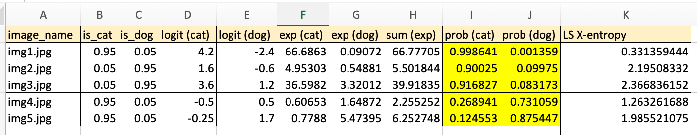
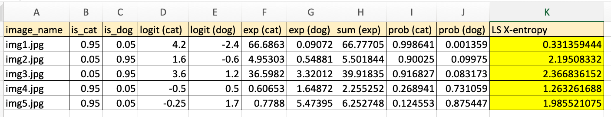
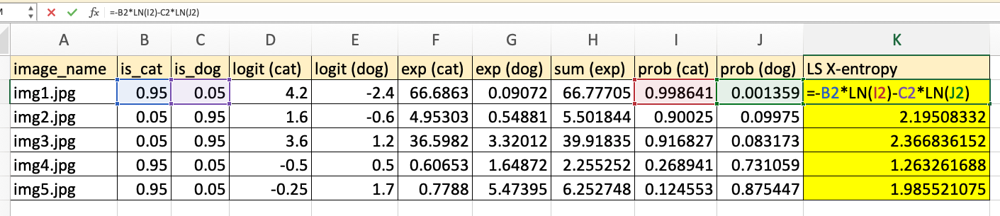
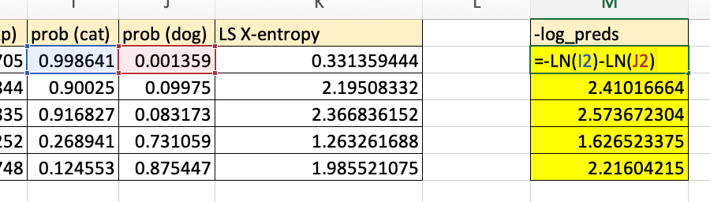
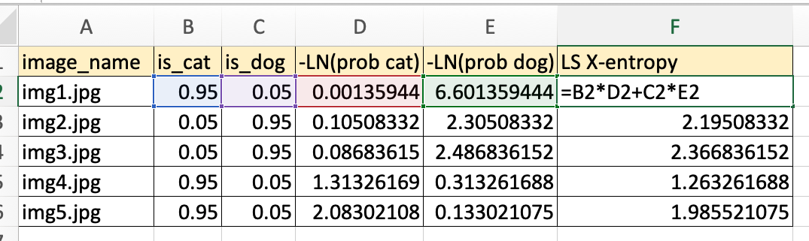

from fastai.vision.all import *Understanding the Code in fastai’s LabelSmoothingCrossEntropy
Inspired by Aman Arora’s blog post, I walk through code of the fastai function LabelSmoothingCrossEntropy. - deep learning - fastai - python
Background
In this blog post I’ll walk through fastai’s LabelSmoothingCrossEntropy function line-by-line and compare it to the helpful Excel example and explanation presented by Aman Arora in his Label Smoothing Explained using Microsoft Excel blog post. This process helped me better visualize how something in Excel (which is visually intuitive for beginners) translates to PyTorch (not always intuitive for beginners).
Excel Version
I’ll start be recreating Aman’s Excel example with the following columns:
image_name: example name of training datais_cat: ground truth noisy labelis_dog: ground truth noisy labellogit (cat): model output (activation) for cat classlogit (dog): model output (activation) for dog classexp (cat): exponential of the cat logitexp (dog): exponential of the dog logitsum (exp): sum of cat and dog exponential for each imageprob (cat): exponential of cat divided by sum of exponential o fdog and exponential of catprob (dog): exponential of dog divided by sum of exponential o fdog and exponential of catLS X-entropy: the negative sum of the ground truth noisy label times the natural log of the class probability (for both dog and cat). The screenshot below shows how this value is calculated in Excel.

fastai’s LabelSmoothingCrossEntropy
Here is the forward method of fastai’s LabelSmoothingCrossEntropy class.
def forward(self, output:Tensor, target:Tensor) -> Tensor:
"Apply `F.log_softmax` on output then blend the loss/num_classes(`c`) with the `F.nll_loss`"
c = output.size()[1]
log_preds = F.log_softmax(output, dim=1)
if self.reduction=='sum': loss = -log_preds.sum()
else:
loss = -log_preds.sum(dim=1) #We divide by that size at the return line so sum and not mean
if self.reduction=='mean': loss = loss.mean()
return loss*self.eps/c + (1-self.eps) * F.nll_loss(log_preds, target.long(), weight=self.weight, reduction=self.reduction)I’ll start by defining the output and target tensors. I’ll also define the noisy target defined in the Excel spreadsheet (is_cat and is_dog).
# logits
output = torch.tensor([
[4.2, -2.4],
[1.6, -0.6],
[3.6, 1.2],
[-0.5, 0.5],
[-0.25, 1.7]
])
# labels
target = torch.tensor([0,1,1,0,0])
# noisy labels
noisy_target = torch.tensor([
[0.95, 0.05],
[0.05, 0.95],
[0.05, 0.95],
[0.95, 0.05],
[0.95, 0.05]])First let’s calculate the loss with fastai to show that it matches the Excel calculations:
LabelSmoothingCrossEntropy(eps=0.1, reduction='none')(output,target)tensor([0.3314, 2.1951, 2.3668, 1.2633, 1.9855])Note the eps parameter which is \(\epsilon\) in Aman’s blog post. I understand this to be the total “noisiness” divided across the classes. In our case, this value is 0.1.
Next, I’ll run through the lines of code in LabelSmoothingCrossEntropy’s forward method if reduction='none' (which is the case for our Excel example), and show that it outputs the same values as Excel.
eps=0.1
c = output.size()[1]
log_preds = F.log_softmax(output, dim=1)
loss = -log_preds.sum(dim=1)
loss*eps/c + (1-eps) * F.nll_loss(log_preds, target.long(), reduction='none')tensor([0.3314, 2.1951, 2.3668, 1.2633, 1.9855])Here, c is the number of classes (2).
Recreating Excel Calculation in PyTorch
I found it a bit more intuitive to recreate the Excel calculation in PyTorch in a slightly different order of operations.
In Excel, we take the softmax of the logits to get the probability of cat and dog (highlighted in the screenshot below).

In PyTorch, we can recreate those values with F.softmax. dim=-1 tells it to take the softmax across the last dimension (of 2 classes).
F.softmax(output, dim=-1)tensor([[0.9986, 0.0014],
[0.9002, 0.0998],
[0.9168, 0.0832],
[0.2689, 0.7311],
[0.1246, 0.8754]])Next, to calculate cross entropy, we multiply the noisy label with the log probability, sum across classes and multiply by negative 1:

In PyTorch, we do that by multiplying noisy_targets by the torch.log probabilities (F.softmax), summing across each row (dim=-1) and multiplying by negative 1.
-1 * (noisy_target * torch.log(F.softmax(output, dim=-1))).sum(dim=-1)tensor([0.3314, 2.1951, 2.3668, 1.2633, 1.9855])This gives us the desired result. Although this looks different from the fastai implementation.
Bringing it All Together
The Excel calculation that I recreated in PyTorch and the fastai implementation look different but achieve the same result. I’ll try to connect and reason through the two approaches.
The first two lines of interest in LabelSmoothingCrossEntropy are straightforward—they define constants used later on.
eps=0.1
c = output.size()[1]
eps, c(0.1, 2)In the next line, log_preds is defined as:
log_preds = F.log_softmax(output, dim=1)
log_predstensor([[-1.3595e-03, -6.6014e+00],
[-1.0508e-01, -2.3051e+00],
[-8.6836e-02, -2.4868e+00],
[-1.3133e+00, -3.1326e-01],
[-2.0830e+00, -1.3302e-01]])In Excel, we fold this step into the following formula (multiplying the noisy labels with the log probabilities and summing both classes):

log_preds is just the LN(I2) and LN(J2) parts in the Excel formula for each image (or row).
The next line in LabelSmoothingCrossEntropy sums the log probabilities across each row (or image) and multiplies the sum by negative 1.
In Excel, this is would be the same as the part of the formula with the noisy labels removed: =-LN(I2)-LN(J2).

loss = -log_preds.sum(dim=1)
losstensor([6.6027, 2.4102, 2.5737, 1.6265, 2.2160])The last part is where the noisy label magic happens in PyTorch.
loss*eps/c + (1-eps) * F.nll_loss(log_preds, target.long(), reduction='none')In the first term, loss*eps/c, the log probabilities summed across both classes for each image is multiplied by 0.1/2 or 0.05:
loss*eps/ctensor([0.3301, 0.1205, 0.1287, 0.0813, 0.1108])The second term, (1-eps) * F.nll_loss(log_preds, target.long(), reduction='none') does a couple of things:
First, it calculates the negative log likelihood loss given the log probabilities (log_preds) and the targets. Note that all nll_loss does is pick out the log_preds items at the target indices for each row:
F.nll_loss(log_preds, target.long(), reduction='none')tensor([1.3595e-03, 2.3051e+00, 2.4868e+00, 1.3133e+00, 2.0830e+00])Since reduction is 'none', this is the same as just indexing each row with our target tensor and multiplying by -1:
-1 * log_preds[[0, 1, 2, 3, 4], target]tensor([1.3595e-03, 2.3051e+00, 2.4868e+00, 1.3133e+00, 2.0830e+00])log_preds # reminder of what log_preds looks liketensor([[-1.3595e-03, -6.6014e+00],
[-1.0508e-01, -2.3051e+00],
[-8.6836e-02, -2.4868e+00],
[-1.3133e+00, -3.1326e-01],
[-2.0830e+00, -1.3302e-01]])target # reminder of what target looks liketensor([0, 1, 1, 0, 0])So, basically, nll_loss with reduction='none' takes the 0-th element of the first row (-1.3595e-03), the 1-th element in the second row (-2.3051e+00) and so on. nll_loss picks only the chosen label’s probabilities, whereas loss is the sum of both class’ probabilities.
The chosen probabilities are then multiplied by 1-eps or 0.90.
Let’s visualize what that last line in LabelSmoothCrossEntropy is doing, row by row, given the log_preds values. I’ve rewritten loss as -log_preds.sum(dim=1).
(-log_preds.sum(dim=1))*eps/c + (1-eps) * F.nll_loss(log_preds, target.long(), reduction='none')| row | -log_preds.sum(dim=1)*eps/c | (1-eps) * F.nll_loss(log_preds, target.long(), reduction=‘none’) |
|---|---|---|
| 1 | -(-1.3595e-03 + -6.6014e+00) * 0.05 | 0.90 * 1.3595e-03 |
| 2 | -(-1.0508e-01 + -2.3051e+00) * 0.05 | 0.90 * 2.3051e+00 |
| 3 | -(-8.6836e-02 + -2.4868e+00) * 0.05 | 0.90 * 2.4868e+00 |
| 4 | -(-1.3133e+00, -3.1326e-01) * 0.05 | 0.90 * 1.3133e+00 |
| 5 | -(-2.0830e+00, -1.3302e-01) * 0.05 | 0.90 * 2.0830e+00 |
In each row you’ll notice that the target log probability is multiplied first by 0.05 (which is eps/c) and then multiplied by 0.90 (which is 1-eps) and then added together. We can rewrite this as follows (adding together 0.05 and 0.90 to get 0.95 for the target class)
| row | -log_preds.sum(dim=1)*eps/c + (1-eps) * F.nll_loss(log_preds, target.long(), reduction=‘none’) |
|---|---|
| 1 | 0.05 * 6.6014e+00 + 0.95 * 1.3595e-03 |
| 2 | 0.05 * 1.0508e-01 + 0.95 * 2.3051e+00 |
| 3 | 0.05 * 8.6836e-02 + 0.95 * 2.4868e+00 |
| 4 | 0.05 * 3.1326e-01 + 0.95 * 1.3133e+00 |
| 5 | 0.05 * 1.3302e-01 + 0.95 * 2.0830e+00 |
I’ll expand the Excel version a bit more to match this form so we can see the parallels:

In this way, the fastai implementation, Aman Arora’s Excel implementation and my PyTorch implementation are visualized and aligned.
Final Thoughts
I often underestimate how much time and thinking it takes to unpack the amount of calculation done in a few lines of code. That’s the beauty and elegance of fastai and PyTorch! But it also emphasizes the time and care needed to walk through each step manually to visualize what is going on.
I hope you enjoyed this blog post!